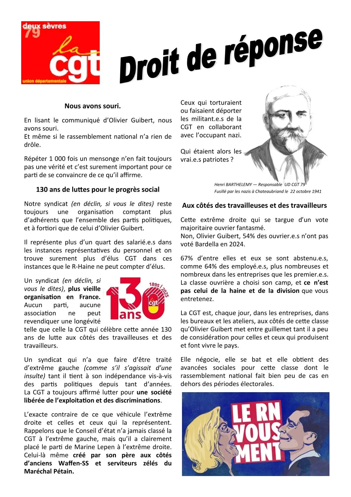
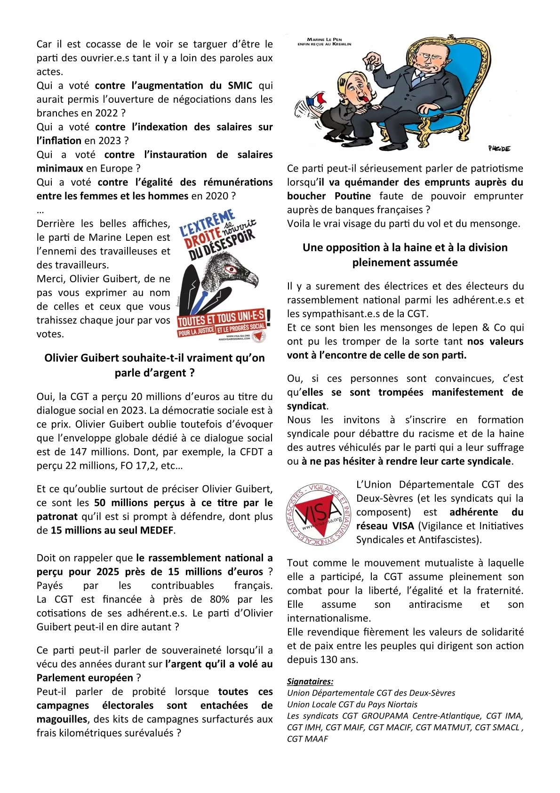

Droit de réponse syndical relayé
La CGT des Deux-Sèvres répond à un communiqué du RN
Date de mise à jour indiquée par Facebook · 17 octobre 2025
Repères éditoriaux
Nous avons relayé le droit de réponse de la CGT des Deux-Sèvres après un communiqué du Rassemblement national publié dans la presse. Les deux pages donnent accès à la réponse du syndicat.
Texte de la publication · CGT 79 Deux-Sèvres
Le droit de réponse rédigé par la CGT au communiqué de presse du R-Haine paru dans la presse la semaine dernière.
Bonne lecture, n'hésitez pas à le faire circulez largement.


Sources
CGT 79 Deux-Sèvres · publication relayée par le PCF 79 · bibliothèque Facebook · AR-0002-FB-00977
À lire aussi · Fabien Gay appelle à défendre les libertés de la presse et syndicales